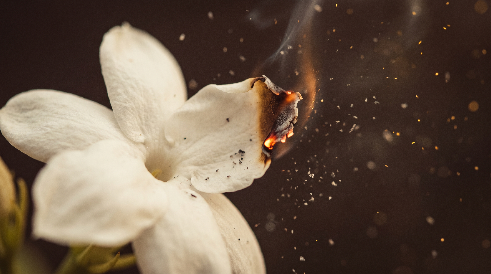
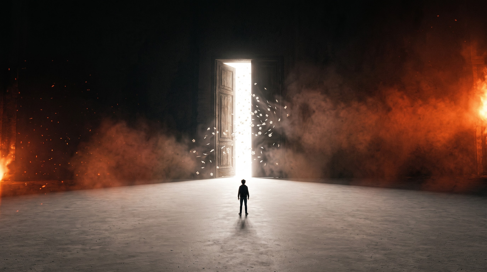
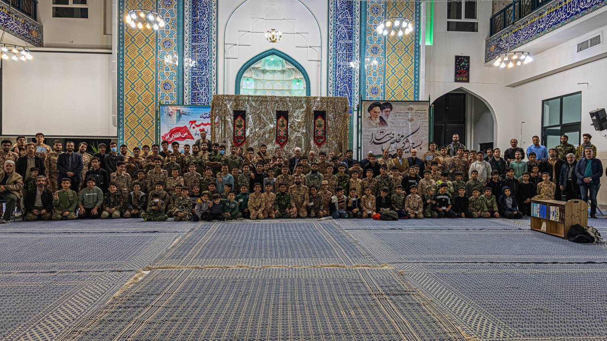

نمایش آیینی صبرا
نمایش صبرا
روایتی نمایشی از جستوجوی حقیقت در دل تاریخ
تریلر نمایش
صبرا

نمایش «صبرا» با حضور آرمان، جوانی امروزی، در مسجد آغاز میشود. آرمان درباره وقایع پس از رحلت پیامبر اکرم(ص) پرسشها و ابهامهایی دارد و در گفتوگو با دوستانش، کیان و ماهان، درباره حقیقت تاریخ و تفاوت روایتها بحث میکند. در ابتدا دیدی بسیار سادهانگارانه به ماجرای هجوم به خانه امیرالمومنین (ع) دارد و پیچیدگیهای این حادثه بزرگ را در نظر نمیگیرد، اما ...
تهیه بلیط

۰۲ / مجموعه
درباره ما
مجموعه رهروان شهدا با کمک مرکز مقاومت شهید محلاتی اولین سری مجموعه تئاتر خود با نام « صبرا » را روی صحنه میبرد